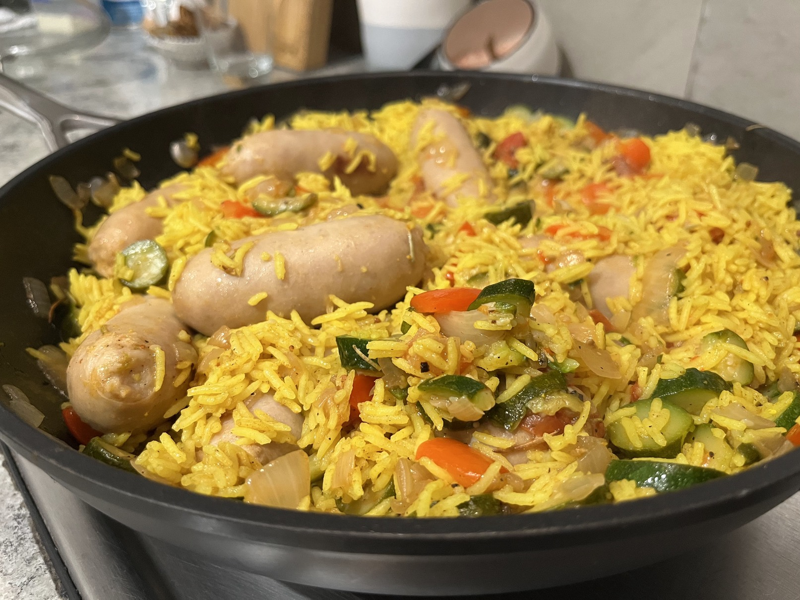

Sausage and rice
One pot wonder.

Ingredients
- 2 diced onions
- 3 crushed cloves of garlic
- 500g Pork sausage
- 1 red pepper
- Zucchini or broccoli
- Baby tomatoes
- 1 mug of rice (about 90% full)
Instructions
- Fry up the diced onion and chopped garlic in some olive oil.
- Pop the rice on to cook separately.
- Add the sausages at this point to fry in the mix, or do them separately in the airfryer and add at the end.
- Chop the red pepper and add to the mix, along with chopped green veg and the baby tomatoes.
- Cut the sausage into discs, and add them when there's about 5 minutes left to go on the frying time.
- Finally, add in the rice and mix thoroughly.
Serves 4.